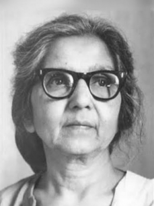

Aruna Asaf Ali
Grand Old Lady

The “Heroine of the 1942 movement,” Aruna Asaf Ali is perhaps best known for flying the Indian flag at Gowalia Tank Maidan in 1942, thereby saving the Quit India movement from an untimely death.
Here's a time line of Aruna Asaf Al life:
- 1942 - The independence movement, or the “Heroine of the 1942 movement
- 1942 - Aruna Asaf Ali is perhaps best known for flying the Indian flag at Gowalia Tank Maidan in 1942.
- 1942 -British authorities had just arrested the movement’s leaders, and Ali was determined not to stand idly by in their absence.
- 1942 -Thereby saving the Quit India movement from an untimely death.
- 1930 - MShe took part in the Salt Satyagraha demonstrations of 1930
- 1941 - She bravely raised the Indian flag in full public view, an act of rebellion that sparked a chain of protests and civil disobedience around the country.
- 1941 - After India gained independence in 1947, Ali dedicated herself to social reform, including women’s and workers’ rights.
- 1942 -Ali’s famous political statement of raising the flag, the police issued a warrant and reward for her arrest. To avoid capture, she went into hiding for four years. She remained active underground, however, working on the Congress Party’s monthly magazine with Ram Manohar Lohia.
- 1958 - She published Patriot newspaper and Link magazine; became the first Mayor of Delhi
- 1964 - won the International Lenin Peace Prize
- 1991 - the Jawaharlal Nehru Award for International Understanding
- 1992 - Ali earned the Padma Vibhushan
- 1997 - India’s second highest civilian honor, then the highest, the Bharat Ratna
“He who is not courageous enough to take risks will accomplish nothing in life.”
-Aruna Asaf Ali